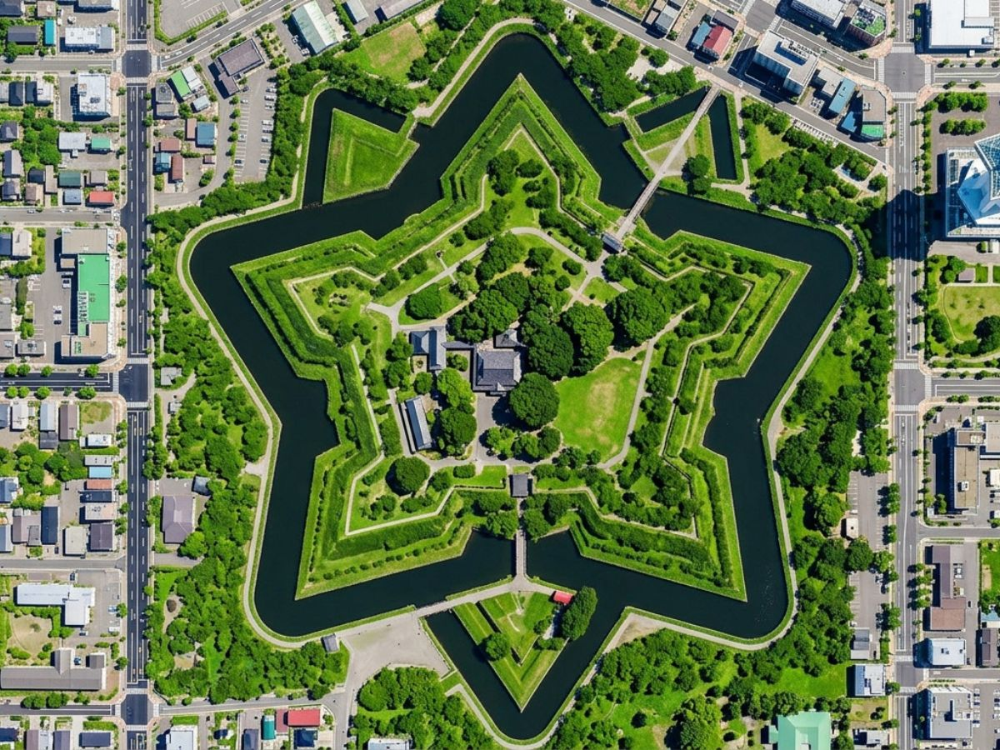
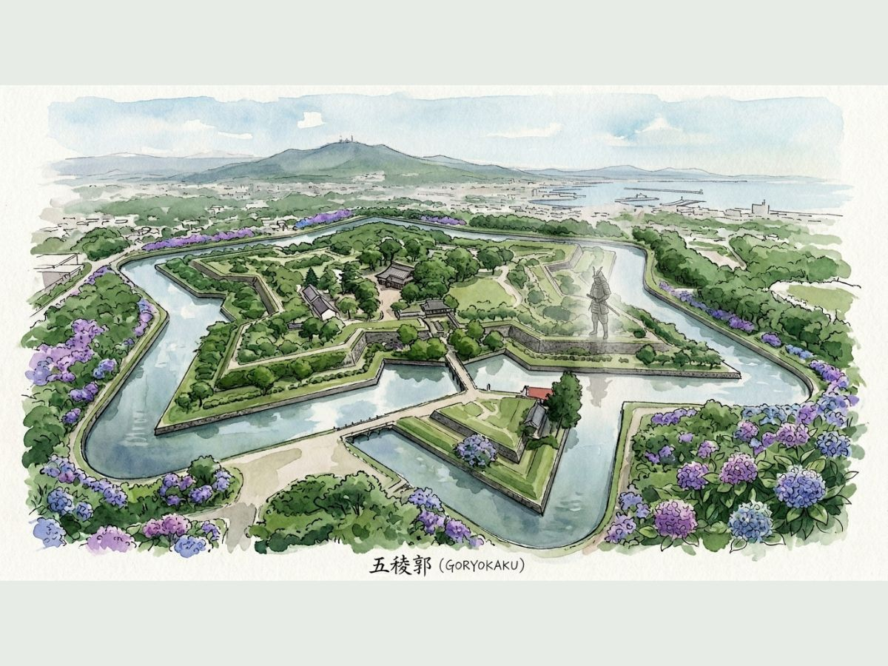
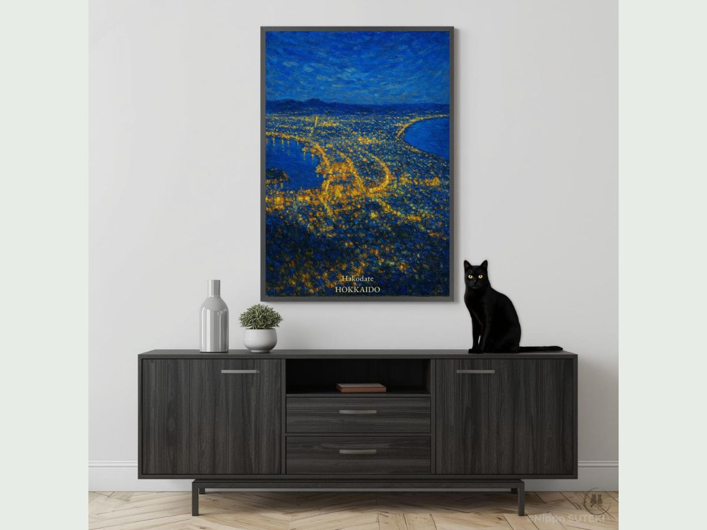

The Secret Story Hidden Inside a Star-Shaped Fortress
From a Star-Shaped Fortress to a City of Golden Lights — Hakodate, Hokkaido
by Sari
Nyahoo~! Hey hey hey, is that the poster you're holding right now?! That shape — it's a STAR!! Oh, that one! THAT one! Is that the new art poster from Kiri & Sari?!
My big sister Kiri was staring at it super quietly and said, "This star holds an extraordinary passion inside it." So cool, right? And that totally got Sari curious too, so I was circling around your feet doing research — and WOW, I found SO much stuff!!
So… what is this star-shaped place, anyway?
The poster shows a real place in Hokkaido, Japan, called Goryokaku (五稜郭). And when you look down at it from above — it's a perfect, gorgeous star. Like, actually perfect!!

Goryokaku from above — a perfect five-pointed star carved into the earth of Hakodate.
But here's the thing… behind that beautiful star shape? There's a story that is super intense and kind of… bittersweet? Like, my chest went all tight when I read it.
The last battle of the samurai — right here!
It was the end of the Edo period. The brand-new Meiji government and the old shogunate's samurai warriors were fighting a huge war over Japan's future — it was called the Boshin War. And the very FINAL battle of that war? It happened right here, at Goryokaku.
…Wait. A battle? Like, with cannons going BOOM?
Uuu… Sari is not great with loud noises… that's a little scary, honestly…
BUT!! The people who fought here were honestly like main characters straight out of a movie!!
There was Enomoto Takeaki — a brilliant naval commander — and Hijikata Toshizo of the famous Shinsengumi samurai group. They chose to make their final stand here, defending their honor and their belief in the old ways, right to the very end.

Goryokaku in summer — green and still, with the memory of those who once stood here.
They weren't just clinging to the past — they were fighting with real pride and vision, even knowing how it would end. This is EXACTLY another real-life Last Samurai story!!
But wait — why is a Japanese castle shaped like a star?!
Okay so THIS is where it gets so cool!! The star design comes from a French military technique called Vauban-style fortification — and yes, the name is very hard to say, I know!!
If a castle is just square, there are blind spots where cannons can't reach. But a star shape? No blind spots. Every angle covered. Every attacker in range. Genius!!
So this place is literally the fusion of Western cutting-edge military tech + Japanese samurai spirit. In one spot. Which is exactly why it hits SO hard for international visitors — especially people from the West who love history and romance!
And the city that holds all this history? It's stunning.
You know the movie The Last Samurai? That world — it actually existed. Right here, in Hakodate. And when history-loving visitors from the US or Europe find that out, their eyes just LIGHT UP!!
And Hakodate itself? It's one of those rare cities that feels like it was made to be looked at from above. It sits on a narrow peninsula jutting into the sea, and when night falls — the city transforms. Golden light threads through the streets, wraps around the harbor, and glows like embers against the deep blue of the ocean and sky. It's one of Japan's most famous night views — and honestly, Sari thinks it's the most beautiful thing ever!!
Bring that golden glow home — as an art poster!

Hakodate HOKKAIDO — available as a digital download art poster from nipponSUTEKI.
The Hakodate HOKKAIDO art poster from nipponSUTEKI captures that exact moment — the city glowing gold in the dark, painted in a rich impressionist style with deep cobalt blues and shimmering amber light. It's the kind of poster that makes a room feel like a dream.
Kiri stared at it for a long time and finally said, "…It holds the weight of history and the warmth of those lights, both at once." Yeah. That's exactly it, Kiri.
Available as a digital download — print it big, frame it beautifully, and let a little piece of Hakodate live on your wall. Oh, and please hang it somewhere Sari can see it from the best spot in the room, okay? Also I've been doing so much research that Sari is very hungry now. Snack please? Nyaaan~!